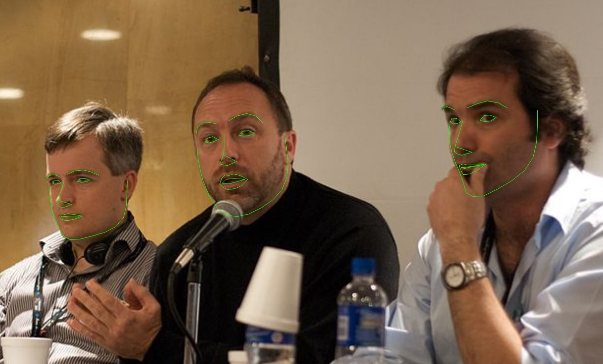

Executive Summary
이 글은 일리노이 주민 세자르 파디야가 2026년 10월 7일 일리노이 북부 연방지방법원에 Grok 운영사를 상대로 낸 집단소송을 읽는다. 그는 증명사진을 만들어 달라며 셀카를 올렸다. 소장이 문제 삼는 것은 그 사진 자체가 아니라, 사진에서 계산해 낸 얼굴의 치수다. 눈과 코와 입과 턱선 사이의 비율과 거리를 서면 동의 없이 수집하고 보관했다는 주장이다.
근거가 된 일리노이 생체정보보호법은 위반 1건에 과실이면 1,000달러, 고의나 무모한 경우면 5,000달러를 물린다. 메타가 이 법으로 6억 5,000만 달러를 내놓은 전례가 있어 기업 쪽 체감이 큰 법이기도 하다. 그렇다고 원고가 이긴다는 뜻은 아니다. 같은 법으로 X Corp을 겨눈 소송은 2024년에 기각됐는데, 쟁점이 된 이미지 해시가 개인을 알아볼 수 있는 얼굴 기하 스캔이라는 점을 원고가 구체적으로 주장하지 못했다는 것이 이유였다.
여기까지가 보도와 소장에 적힌 사실이다. 4절과 5절에서 이미지 편집 파이프라인의 중간 산출물과 데이터 목록 쪽으로 질문을 돌리는 대목은 어느 당사자의 주장도 법원의 판단도 아니라 이 글의 해석이다.
주요 수치
네 숫자를 뽑았다. 앞의 둘은 이 법이 위반 한 건에 매기는 값과 지금까지 실제로 오간 가장 큰 합의금이고, 뒤의 둘은 Grok이 받은 소송 수와 2024년 개정이 바꿔 놓은 셈법이다.
출처: MediaPost, Sigma Law Group, 일리노이 생체정보보호법(740 ILCS 14) 조문.
5,000달러
고의·무모한 위반 1건당 배상액
과실이면 1,000달러이고, 실제 손해가 그보다 크면 큰 쪽을 따른다
6억 5,000만 달러
메타가 이 법으로 낸 합의금
구글 포토는 2022년에 1억 달러로 합의했다
세 건
한 달 남짓 사이 Grok이 받은 얼굴 데이터 소송
9월 초 쿡카운티 주법원, 10월 7일과 12일 연방법원이다
1인당 1회
2024년 개정이 정한 위반 산정 단위
그전에는 같은 사람에게서 수집할 때마다 따로 셌다
증명사진을 부탁했을 뿐인데
세자르 파디야는 일리노이에 사는 Grok 이용자다. 그가 한 일은 특별하지 않다. 자기 셀카를 올리고 이것으로 쓸 만한 증명사진을 만들어 달라고 했고, 스타일을 바꾼 이미지도 몇 장 받았다. 요즘 이미지 생성 서비스에서 가장 흔한 쓰임새다. 그는 그 과정에서 Grok이 자기 얼굴을 따로 측정하고 있는 줄 몰랐다고 주장한다.
2026년 10월 7일 그는 일리노이 북부 연방지방법원에 집단소송을 냈다. 소장이 묘사하는 Grok의 동작은 이렇다. "원고의 얼굴을 자동으로 찾아내 스캔하고, 원고 얼굴 윤곽에 관한 기하 데이터와 눈·코·입·턱·얼굴 윤곽 같은 얼굴 랜드마크들 사이의 비율 및 공간적 관계를 추출했다." 영어 원문은 "automatically locating and scanning plaintiff's face, and by extracting geometric data relating to the contours of plaintiff's face and the proportions of, and spatial relationships among, facial landmarks"다.
소장은 한 가지를 더 적는다. 그렇게 뽑아낸 수치가 이용자 계정에 연결되고, 그 데이터를 언제 지우는지 밝힌 공개 문서는 없다는 것이다. 얼굴을 측정하는 행위와 그 결과를 계정에 붙여 두는 행위를 따로 세운 셈인데, 뒤쪽이 보관·파기 정책 조항과 바로 맞물린다.
청구의 뼈대는 일리노이 생체정보보호법 제15조 두 항이다. 하나는 수집하기 전에 수집 사실과 목적, 보관 기간을 서면으로 알리고 본인의 서면 동의를 받아야 한다는 조항이고, 다른 하나는 생체정보를 가진 사설 기관이라면 보관과 파기 일정을 공개된 문서로 마련해 둬야 한다는 조항이다. 그는 손해배상과 함께 추가 수집을 멈추라는 명령, 이미 모은 데이터의 파기를 요청했다.
집단의 범위도 소장에 적혀 있다. 일리노이에서 Grok에 자기 얼굴 사진을 올린 뒤 그 얼굴을 분석해 달라고 했거나 그 사진을 바탕으로 무언가를 만들어 달라고 한 이용자 전부다. 회사가 무엇을 저장했는지가 아니라 이용자가 무엇을 부탁했는지로 선이 그어져 있다.
피고 이름이 조금 헷갈린다. 소장의 피고는 SpaceXAI Corp.과 SpaceXAI LLC다. Grok을 만든 xAI가 X Corp과 합쳐진 뒤 스페이스X 아래로 들어가면서 바뀐 법인 이름이고, 제품 이름 Grok은 그대로다. 그래서 "Grok을 상대로 낸 소송"이라고 부르지만 법정에 선 상대는 SpaceXAI다. 이 글을 쓰는 시점까지 회사 쪽 공식 입장은 확인되지 않았다.
법이 그은 선은 이미지가 아니라 스캔에 있다
조문만 읽으면 이 소송은 성립하지 않을 것처럼 보인다. 2008년에 만들어진 일리노이 생체정보보호법은 규제 대상인 "생체 식별자"에 망막·홍채 스캔, 지문, 음성 지문, 그리고 "손 또는 얼굴 기하 스캔"을 넣는다. 그런데 바로 그 정의가 사진은 명시적으로 뺀다. "생체 정보" 쪽 정의도 마찬가지로, 제외된 항목에서 파생된 정보는 역시 제외한다고 적는다. 사진이 빠졌으니 사진에서 나온 것도 빠지는 것 아닌가.
피고들은 실제로 여러 번 그렇게 주장했고, 법원은 여러 번 받아들이지 않았다. Monroy v. Shutterfly에서 피고는 사진에서 파생된 정보를 정의에서 뺐다는 것은 입법자가 사진에서 나온 생체 데이터 전부를 법 바깥에 두려 한 뜻이라고 했다. 법원은 두 정의를 갈라 읽었다. 사진에서 나온 데이터가 '생체 정보'는 아닐 수 있어도 '생체 식별자', 곧 얼굴 기하 스캔은 될 수 있다는 것이다. Vance v. Microsoft에서도 법원은 사진 제외 조항이 이 쟁점과 무관하다고 정리했다. 원고들이 문제 삼는 것은 회사가 얼굴 사진을 갖고 있다는 사실이 아니기 때문이다. Sosa v. Onfido 역시 얼굴에서 뽑아낸 데이터가 얼굴 기하 스캔에 해당할 수 있다고 봤다.
정리하면 선은 이미지에 있지 않다. 사진을 보관하는 일은 법 바깥에 있고, 그 사진을 얼굴 정렬이나 매칭 알고리즘에 돌리는 일은 법 안에 있다. 같은 파일을 쥐고 있어도 거기에 무엇을 했는지가 책임을 가른다.
다만 이 선이 아무 데나 그어지는 것은 아니다. 2024년 6월 X Corp을 상대로 한 소송은 기각됐다. 원고가 겨눈 것은 아동 성착취물 탐지에 쓰이는 PhotoDNA였는데, 이 기술은 이미지를 해시값으로 바꿔 알려진 이미지와 대조한다. 법원은 그 해시값이 사진 속 사람을 알아보게 해 주는 얼굴 기하 스캔이라는 점을 원고가 주장하지 못했다고 판단했다. 개인을 식별하지 못하는 계산 결과는 생체 식별자가 아니라는 뜻이다.
이 기각 판결을 옆에 놓고 보면 파디야의 소장이 왜 그렇게 구체적인지 설명이 된다. 눈, 코, 입, 턱, 얼굴 윤곽을 하나씩 이름으로 부르고 그 사이의 비율과 공간적 관계까지 적은 것은 수사가 아니다. 해시값 사건이 걸려 넘어진 바로 그 자리를 비켜 가려고 쓴 문장으로 읽힌다. 소장을 쓰는 쪽은 이미 어디에 선이 그어져 있는지 알고 있고, 그 선에 맞춰 무엇을 주장해야 하는지도 안다.
구글과 메타에도 같은 법으로 소송이 걸려 있다
파디야 사건은 Grok이 받은 첫 번째 생체정보 소송이 아니다. 한 달 앞선 2026년 9월 초, 같은 법을 근거로 한 집단소송이 일리노이 쿡카운티 순회법원에 제기됐다. 이쪽은 범위가 더 좁다. 이용자가 사진을 올려 AI 이미지 편집을 요청할 때마다 Grok이 얼굴 기하 데이터를 수집한다는 주장이다. 연방법원과 주법원이라는 점도 다르다. 그리고 파디야 사건 닷새 뒤인 10월 12일, 같은 연방법원에 얼굴 스캔을 둘러싼 집단소송이 한 건 더 접수됐다. 보도는 이 건의 원고 이름을 따로 밝히지 않는다. 같은 제품을 두고 세 개의 절차가 동시에 돌아가고 있다.
쿡카운티 소송을 낸 로펌은 몇 달 전 같은 법원에 구글을 상대로 거의 같은 이론의 집단소송을 냈다. 대상은 제미나이의 사진 편집 기능이었다. 사진 편집 기능이 곧 얼굴 스캔이라는 주장을 구글에서 xAI로 그대로 옮겨 적용한 셈이다. 비슷한 시기에 또 다른 소송도 나왔다. 9월 4일 일리노이 북부 연방지방법원에 제기된 Alvarez v. Meta는 페이스북과 인스타그램에 올라온 사진을 스마트글래스의 얼굴인식 기능과 생성형 모델 학습에 동의 없이 썼다고 주장한다. 9월 첫째 주 나흘 사이에 일리노이에서 AI 이미지 파이프라인을 겨눈 소송이 이렇게 두 건 몰렸다.
이 법이 기업 쪽에서 유난히 무겁게 받아들여지는 이유는 두 가지다. 하나는 금액이다. 메타는 6억 5,000만 달러에 합의했고, 구글 포토는 2022년에 1억 달러에 합의해 신청자 한 명당 평균 95달러 남짓이 지급됐다. 클리어뷰 AI는 2022년 일리노이 합의에서 돈 대신 얼굴 데이터베이스를 민간 기업에 넘기지 않기로 했고, 전국 단위로 묶인 별도 소송에서는 현금이 아니라 회사 지분 23%를 집단에 넘기는 합의가 승인됐다가 2026년 7월 항소법원에서 취소됐다. 합의로 닫힌 줄 알았던 사건이 다시 열리기도 한다. 다른 하나는 구조다. 이 법은 개인이 직접 소를 제기할 권리를 두고 있어서 규제기관의 집행을 기다릴 필요가 없다.
그래서 2024년에 법이 한 번 조정됐다. 그전에는 같은 사람에게서 생체정보를 수집할 때마다 별개의 위반으로 세는 해석이 가능했다. 매일 출근 지문을 찍는 직원 한 명에게도 위반 건수가 쌓이는 구조여서 책임이 회사를 통째로 날릴 규모가 된다는 지적이 있었다. 개정법은 같은 사람에 대한 위반을 1회로 묶었고, 전자 서명도 서면 동의로 인정했다. 액수의 상한이 생긴 것이지 의무가 줄어든 것은 아니다.
'저장은 안 한다'는 안전한 대답이 아니다
셀카 한 장을 증명사진으로 바꾸는 기능이 안에서 어떻게 돌아가는지는 업계에 널리 알려져 있다. 먼저 사진에서 얼굴이 어디 있는지 찾고, 그 얼굴에서 눈꼬리나 콧날, 턱선 같은 지점을 수십에서 수백 개 집어낸다. 이 좌표들을 기준으로 얼굴을 똑바로 세우고 잘라낸 다음, 생성 모델에 조건으로 넣는다. 두 번째 단계의 산출물이 소장이 묘사한 "얼굴 랜드마크들 사이의 비율과 공간적 관계"와 사실상 같은 종류의 데이터다. 소장의 언어는 어떤 비밀 기술을 폭로한 것이 아니라, 흔한 전처리 단계를 법률 용어로 옮겨 적은 쪽에 가깝다.

이 좌표들은 보통 사용자에게 보이지 않는다. 데이터베이스에 남기지도 않는다. 요청을 처리하는 몇 초 동안 메모리에 있다가 사라진다. 그래서 "우리는 얼굴 데이터베이스를 만들지 않는다"는 회사 쪽 설명은 대개 사실이다. 문제는 그 사실이 면책으로 이어지느냐다.
파디야의 소장은 Grok에 관해서는 그 전제부터 인정하지 않는다. 뽑아낸 수치가 계정에 연결되고 언제 지우는지 밝힌 문서가 없다는 주장이기 때문이다. 이 주장이 사실로 받아들여지면 휘발성 여부는 따질 일도 없다. 따져야 할 자리는 그 주장이 받아들여지지 않는 경우, 그러니까 정말 몇 초 만에 버리는 파이프라인 쪽이다.
조문은 저장을 요건으로 달지 않는다. 사전 고지와 서면 동의 의무는 "수집"하거나 "포착"하는 시점에 붙고, 보관·파기 정책 의무는 생체정보를 보유한 기관에 붙는다. 법원들이 "얼굴 사진을 갖고 있는 것 자체는 위법이 아니다"라고 하면서도 그 사진을 알고리즘에 돌려 기하 데이터를 얻는 행위를 문제 삼아 온 것도 같은 방향이다. 지금까지의 판례 흐름에서 중간 산출물이고 금방 버린다는 사실만으로 책임이 사라지지는 않는다.
반대 방향의 제약도 같이 봐야 공평하다. X Corp 사건이 보여 준 것처럼, 이미지에서 무언가를 계산했다는 사실만으로 전부 생체 식별자가 되지는 않는다. 그 계산 결과가 개인을 알아볼 수 있게 해 주느냐가 갈림길이다. 얼굴 랜드마크 좌표가 그 기준을 넘는지는 결국 법정에서 다퉈질 문제이고, Grok을 겨눈 세 건 모두 아직 주장 단계다.
페블러스가 이 소식을 주목하는 이유
이 소식은 보통 머스크의 AI 회사가 또 소송을 당했다는 이야기로 읽힌다. 데이터를 다루는 자리에서는 다른 것이 먼저 보인다. 데이터 목록을 만들 때 우리가 무엇을 '데이터'로 치는지에 관한 이야기다.
대부분의 데이터 목록은 받은 것과 남긴 것을 적는다. 이용자가 업로드한 파일, 테이블에 들어간 컬럼, 객체 저장소에 쌓인 오브젝트가 거기 올라간다. 처리 도중에 생겼다가 사라지는 특징값과 임베딩, 랜드마크 좌표는 보통 거기 없다. 데이터가 아니라 연산의 일부로 여겨지기 때문이다. 코드를 읽으면 분명히 보이는데 목록에는 없는 항목이 생긴다.
이번 소송들이 세우는 주장은 그 중간 산출물이 바로 규제 대상이라는 것이다. 저장했는지, 사용자에게 보여 줬는지가 아니라 계산했는지가 책임의 단위가 된다. 이 주장이 법정에서 끝까지 받아들여질지는 아직 모른다. 다만 받아들여지는 쪽으로 기운 판례가 이미 몇 건 쌓여 있다는 점은 확인된 사실이다.
그래서 평소에 확인해 둘 것이 세 가지 있다. 첫째, 우리 파이프라인이 처리 중에 만들어 내는 파생 데이터가 데이터 목록과 계보 문서에 이름을 갖고 올라가 있는가. 둘째, 얼굴이나 목소리처럼 사람을 알아볼 수 있는 입력을 받는 기능이 하나라도 있다면, 그 기능이 중간에 무엇을 계산하는지 법무 쪽에 설명할 수 있는 문서가 있는가. 셋째, 동의 문구가 "사진을 업로드한다"까지만 적고 "그 사진에서 얼굴의 치수를 계산한다"는 적지 않고 있지는 않은가.
한국 상황도 짚어 둘 만하다. 개인정보보호법은 개인을 알아볼 목적으로 기술적 수단을 써서 만든 신체적·생리적·행동적 특징 정보를 민감정보로 보고 별도 동의를 요구한다. 여기서 "개인을 알아볼 목적으로"라는 조건이 이미지 편집 기능에 어떻게 적용되는지는 따로 따져야 할 문제다. 다만 위반 1건당 정액 배상을 걸고 개인이 곧바로 집단소송에 들어가는 일리노이식 구조는 국내에 없다.
여기까지 읽어 주셔서 감사하다. 이미지나 음성을 다루는 서비스를 만들고 있다면, 오늘 한 번쯤 파이프라인 중간 단계의 산출물 이름을 소리 내어 읽어 보시면 좋겠다. 그 이름들이 데이터 목록에 없다면 그것이 이 글이 전하려는 전부다. 여러분의 데이터 목록은 파생 데이터를 어떻게 적고 있는지 나눠 주시면 반갑겠다.
참고문헌
언론 보도
- 1.Davis, W. (2026, October 9). "Grok Sued Over Biometric Privacy." MediaPost.
- 2.Wayas, I. (2026, October 13). "SpaceXAI faces two Illinois lawsuits over Grok's facial analysis." Cryptopolitan.
법무법인 분석
- 3.Sigma Law Group. (2026, September 9). "Two BIPA Suits in Four Days Put AI Training on Uploaded Photos in the Crosshairs." Sigma Law Group.
선례·합의 기록
- 4.American Civil Liberties Union. (2022, May 11). "ACLU v. Clearview AI." ACLU.
- 5.Recording Law Editorial Team. (2026, July 15). "Clearview AI Settlement Vacated by Seventh Circuit, Sent Back to District Court." RecordingLaw.com.
법령
- 6.Illinois General Assembly. (2008). Biometric Information Privacy Act, 740 ILCS 14.